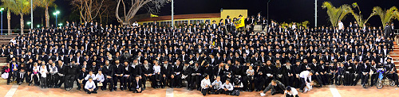

רשמים קצרים משבת ארוכה - למעלה מהזמן
רשמים קצרים משבת ארוכה - למעלה מהזמן

קרני שמש אחרונות עוד האירו את שמי שפלת החוף באור מיוחד של ערב שבת, כאשר קרוב לאלף תמימים התכנסו באולם הגדול שבגבעת וושינגטון לתפלת מנחה. עוד רגע והשמש צנחה אל מעבר לאופק, מבשרת את כניסת השבת.
כל שבת מהווה עלייה אל הלמעלה מהזמן, עצירת מירוץ החיים כאילו כל מלאכתך עשויה. היהודי השובת חש במנוחה ושלווה, קסם רגוע שורה על היקום, והוא מייחל שהמצב הזה לא יסתיים לעולם, שלא נצטרך לרדת שוב אל ימי המעשה.
בכל שבת זה כך, אך דומה שלשבת שכולה משיח יש קסם מיוחד שבעתיים. בלי סוף תמימים מלאי תום ולהט, ב-24 שעות של תפלות השבת, שיעורי חסידות, ופארבריינגען אחד ארוך, בניצוחם של משפיעי הישיבות. רגעים שהנך רוצה שלא יגמרו לעולם.
עוד מעט יגיע יום שכולו שבת, אז באמת נשב לאותו פארבריינגען שאין לו סוף, נעלה אל הלמעלה מן הזמן ולא נשוב אליו. אולי ‘שבת שכולה משיח’ היא טעימה קלה, מעין ודוגמה, מאותה שבת שלא תגמר.
•
בזמן שטרם כניסת השבת התכנסו הבחורים באחד האולמות בגבעה לצפיה בתכנית הוידיאו ‘ימי בשורה’ שנערכה במיוחד לשבת זו.
בתכנית הוידיאו מעין ‘יומן מבית חיינו’ מצולם מתקופת תנש”א-ב, הימים בהם בישר הרבי את בשורת הגאולה. וביומן קטעים משיחותיו הקדושות של הרבי, צילומי מאורעות ומסמכים הקשורים לאותה תקופה, וראיונות עם חסידים ששהו ב-770 באותם ימים, שהכניסו את הצופים לאוירה המיוחדת של “זמן השיא” שהרבי החדיר בנו.
לאחר תפלת מנחה קיבל את פני הבחורים הרב מנחם מענדל שי’ וילשאנסקי, ראש ישיבת חב”ד בחיפה בברכת ברוכים הבאים נלהבת, ובדברים אודות הזכות והאחריות של תלמידי התמימים לעת כזאת בעמדנו על סף הגאולה.
לאחר סדר לימוד של שיחות קודש ומאמרים מתוך החוברות שהודפסו במיוחד לשבת זו, נעמדו לתפילת קבלת שבת בחיות מיוחדת שכמוה יש רק בשבת שכולה משיח.
את סעודת השבת פתח הרב יוסף יצחק שי’ לוין מישיבת תומכי תמימים ברחובות, בסיפור קצר ובמסר ברור אודות הביטול לנשיא. ולאחריו עלה אורח השבת הרב עקיבא שי’ וגנר ראש ישיבת תומכי תמימים בטורונטו שחזר נקודה מתוך הדבר-מלכות של פרשת צו תנש”א.
בחב”ד הכל צריך להיות בסדר מסודר, ולשם כך מונו אחראים מהתמימים הבוגרים שתפקידם לפקח על הסדר וההנהגה בתכניות השבת. גם בעת הסעודה פיקחו האחראים על הניגונים, כשמקום בראש תופס הניגון החדש על פרק קי”א, פדות שלח לעמו.
בתום הסעודה סודר חדר האוכל להתוועדויות התוועדויות, כאשר גם כאן שורר הסדר כשלכל שכבת גיל מיועדת התוועדות עם המשפיעים שלהם. שעות ארוכות אל תוך הלילה עוד ישבו מאות מאות בחורים סביב המשפיעים, רתוקים לדברים וממאנים ללכת לישון.
למחרת בבוקר בעת סדר חסידות שוב התמלא הזאל, שוב יושבים קבוצות קבוצות סביב המשפיעים בלימוד קונטרס י”א ניסן תש”נ. במוצאי השבת התקיימה הגרלה בין התלמידים שנכחו בסדר חסידות, והת’ יונתן שי’ אנקווה זכה בעותק של הקונטרס שנתקבל מידו הקדושה של הרבי מלך המשיח.
לאחר קריאת התורה נשא את דרשת שבת הגדול הרב יצחק אייזיק שי’ לנדא, ר”מ בישיבת חב”ד בצפת. בדבריו שילב הוראות בעבודת ה’ מהלכות הפסח, וסיים בדברים נלהבים אודות תוקף האמונה בדבריו של הרבי, והגאון יעקב שצריך להיות בצעקת ‘משיח נאו’ והכרזת ‘יחי אדוננו’ מבלי לבוש.
סעודת השבת מלכתחילה התחילה כהתוועדות חסידית, כאשר הכל ישובים סביב שולחן גדול ובראשו המשפיעים.
משעות הצהריים ועד סמוך לשקיעה נמשכה ההתוועדות, במהלכה נשאו דברים אורח השבת הרב עקיבא שי’ וגנר, הרב לוי יצחק שי’ גינזבורג, הרב זלמן שי’ נוטיק, הרב עופר שי’ מיודובניק, הרב זושא שי’ זילברשטיין, הרב יוסף יצחק שי’ אופן, ועוד. התוועדות שהיא כשלעצמה יכולה לספק חומר לכמה כתבות.
•
בהקשר דומה ציטט הרבי את המשפט “לא גמרנו, הננו רק עושים הפסקה עד הפעם הבאה”.
השמש שקעה שוב, ועל כרחנו יצאה השבת. אך לא סיימנו אותה, אנו מחכים עוד לשוב אליה. מיד ממש יגיע סוף כל סוף היום שכולו שבת, אז תהיה זאת השבת שכולה משיח האמיתית, השבת שלא נגמרת.